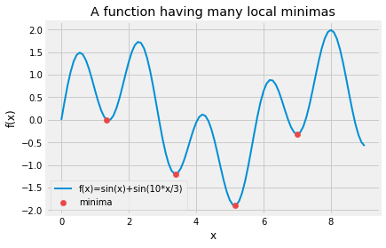

Derivative-free Optimization
Tutorial for Genetic algorithms and Simulated Annealing
Example
Let us look at the graph of a simple 1-D function. $$f(x) = sin(x)+sin(\dfrac{10x}{3})$$

The function has 4 local minimas in the range (0, 8). Gradient-based methods are very efficient methods to find local minimas. But, such algorithms would fail when presented with such a function and asked to find the global minima. It will heavily depend on the starting condition, if the solution found is global or not. For this example, if the initial point was in the range (4.5 , 6) it would find the global minima.
Let us now try and use the newly learnt Genetic algorithm, and test out how it works on this problem. But first, we need to implement the algorithm. So let's get ready to get our hands dirty.
Genotype Representation
The first step in the genetic algorithm is to formulate the solutions to the problem (chromosones) as a binary string. This is sometimes the most crucial step in formulating a GA, and convergence may heavily depend on the design choices considered here.
For us, the given problem is a 1-D function that takes a real number as an input and returns a real value. We know that the domain of the function is between (0,8). We can this observation to our advantage. The idea is quite simple, and here it is. Let's say we want to represent 2.048 in a binary representation, we first multiply it by 1000 to get 2.049*1000 = 2049, and then find the binary representation of the number which is 100000000001.
To represent all numbers between 0 and 8 with upto 3 decimal places, we could use a 13-bit binary representation (2^13 = 8192 numbers) and use it to represent all numbers with 3 decimal places between (0, 8.192).
Thus, we get the real valued representation for any 13-bit chromosome. In python, we will define a function for the conversion:
def get_chromosome_representation(x):
return int(x, 2)/1000
Let us look some random binary strings and their corresponding values -
0110111111100 => 3.58
1000001011001 => 4.185
1110101011011 => 7.515
0010111110101 => 1.525
1110100110101 => 7.477
0000000000000 => 0.0
1000000000000 => 4.096
Population Initialization
We initialise the population of chromosomes randomly. We sample random 13-bit strings. We use the numpy libray for this purpose. The size of the population is an important choice to make. Let's generate a population of size 10.
def init_population(population_size, chromosome_size):
np.random.seed(0)
population = np.random.randint(2, size=(population_size, chromosome_size))
population = [''.join([str(i) for i in chrom]) for chrom in population]
return population
population = init_population(10, 13)
population
Output>
['0110111111100',
'1000001011001',
'1110101011011',
'0010111110101',
'1110100110101',
'0000011000110',
'1001011111101',
'1001001101001',
'0001101000001',
'0101111101111']
Fitness function
We have a minimization objective for our function. Generally a fitness function is a metric for how fit the candidate is, thus, the larger the fitness the better. Thus, we use -f(x) as the fitness function. This ensures that our minima will have the maximum fitness.
def f(x):
return np.sin(x) + np.sin(10*x/3)
def fitness_function(population):
'''
Calcualtes the fitness of the population
Returns the fitness score for the entire population
'''
vals = [int(n, 2)/1000 for n in population]
fitness = [-f(x) for x in vals]
population = np.expand_dims(population, 1)
fitness = np.expand_dims(fitness, 1)
data = np.concatenate([population, fitness], axis=1)
data = [[x, round(float(y), 4)] for [x,y] in data]
return data
data = fitness_function(population)
print("Chromosomes and their fitness values")
data
Output>
Chromosomes and their fitness values
[['0110111111100', 1.0161],
['1000001011001', -0.1184],
['1110101011011', -0.8604],
['0010111110101', -0.067],
['1110100110101', -0.7219],
['0000011000110', -0.8098],
['1001011111101', 1.4643],
['1001001101001', 1.002],
['0001101000001', -1.0968],
['0101111101111', 0.6014]]
Parent Selection
We use k-way tournamet selection for parent selection.
def tournament_selection(data, k=5, num_parents=10):
# Shuffle the data
parents = []
# Select parents
for i in range(num_parents):
# Select k samples and take the one having max fitness
np.random.shuffle(data)
parent = sorted(data[:k],key=lambda l:l[1], reverse=True)[0][0]
parents.append(parent)
return parents
parents = tournament_selection(data, 5, 5)
parents
Output>
['1001001101001',
'1001011111101',
'0010111110101',
'1001011111101',
'1001001101001']
Crossover
We use uniform crossover to produce new offsprings.
def uniform_crossover(parents, num_children=5):
'''
Performs uniform crossover given a set of parents.
Two parents are selected randomly from the pool of parents for crossover.
'''
children = []
# for i in range(self.population_size):
for i in range(num_children):
p1 = np.random.choice(parents, replace=False)
p2 = np.random.choice(parents)
p = [p1, p2]
child = ''
for i in range(len(p1)):
toss = np.random.randint(2)
child += p[toss][i]
print("{} x {} => {}".format(p1, p2, child))
children.append(child)
return children
children = uniform_crossover(parents, num_children=5)
Output>
1001011111101 x 1001011111101 => 1001011111101
1001001101001 x 1001001101001 => 1001001101001
1001001101001 x 1001001101001 => 1001001101001
1001001101001 x 1001011111101 => 1001011111101
0010111110101 x 1001001101001 => 0000001100101
Mutation
def mutation(population, prob=0.01):
mutated = []
for chrom in population:
new_chrom = ''
for i in range(len(chrom)):
toss = np.random.random()
gene = chrom[i]
if toss < prob:
gene = str(1-int(gene))
new_chrom += gene
mutated.append(new_chrom)
return mutated
mutated = mutation(children, prob=0.1)
result = list(zip(mutated, children))
for i in range(len(result)):
print("{} +=> {}".format(result[i][0], result[i][1]))
Output>
1000011101101 +=> 1001011111101
0001001001011 +=> 1001001101001
0001001101001 +=> 1001001101001
1001111111101 +=> 1001011111101
0000001010101 +=> 0000001100101
Survivor Selection
We remove the most unfit parents and replace them by the newly generated offpsrings and set them as the new population for the next generation.
def survivor_selection(data, children):
data = sorted(data,key=lambda l:l[1], reverse=False)
count = len(children)
population = np.array(data)[:,0]
population[:count] = children
return list(population)
survivor_selection(data, mutated)
Output>
['1000011101101',
'0001001001011',
'0001001101001',
'1001111111101',
'0000001010101',
'0010111110101',
'0101111101111',
'1001001101001',
'0110111111100',
'1001011111101']
A fully working example
Now that we have looked at and understood each and every component of the genetic algorithm individually, let's look at a fully working example. To make the code cleaner, we will first define a python class, and then put the functions as the methods of the class.
class GeneticAlgorithmSolver:
'''
Solves genetic algorithm for the problem sin(x) + sin(10x/3)
'''
def __init__(self, population_size, chromosome_size):
'''
Initialise the population randomly
'''
np.random.seed(0)
self.population = np.random.randint(2, size=(population_size, chromosome_size))
self.population = [''.join([str(i) for i in chrom]) for chrom in self.population]
self.population_size = population_size
def f(self, x):
'''
Objective function
'''
return np.sin(x) + np.sin(10*x/3)
def fitness_function(self, population):
'''
Calcualtes the fitness of the population
'''
vals = [int(n, 2)/1000 for n in population]
fitness = [-self.f(x) for x in vals]
population = np.expand_dims(population, 1)
fitness = np.expand_dims(fitness, 1)
data = np.concatenate([population, fitness], axis=1)
data = [[x, float(y)] for [x,y] in data]
avg_fitness = sum(fitness) / len(fitness)
return data, avg_fitness
def tournament_selection(self, data, k=5, num_parents=5):
'''
Tournament selection strategy for selecting parents
'''
# Shuffle the data
parents = []
# Select parents
for i in range(num_parents):
# Select k samples and take the one having max fitness
np.random.shuffle(data)
parent = sorted(data[:k],key=lambda l:l[1], reverse=True)[0][0]
parents.append(parent)
return parents
def uniform_crossover(self, parents, num_children=5):
'''
Generate new offsprings using uniform crossover
'''
children = []
# for i in range(self.population_size):
for i in range(num_children):
p1 = np.random.choice(parents, replace=False)
p2 = np.random.choice(parents)
p = [p1, p2]
child = ''
for i in range(len(p1)):
toss = np.random.randint(2)
child += p[toss][i]
# print("{} x {} => {}".format(p1, p2, child))
children.append(child)
return children
def mutation(self, population, prob=0.01):
'''
Perform bit-flip mutation
'''
mutated = []
for chrom in population:
new_chrom = ''
for i in range(len(chrom)):
toss = np.random.random()
gene = chrom[i]
if toss < prob:
gene = str(1-int(gene))
new_chrom += gene
mutated.append(new_chrom)
return mutated
def survivor_selection(self, data, children):
'''
Replace the weakest parents by the newly generated offsprings
'''
data = sorted(data,key=lambda l:l[1], reverse=False)
count = len(children)
population = np.array(data)[:,0]
population[:count] = children
return population
def plot_objective(self):
'''
Plot the objective function
'''
x = np.linspace(0, 9, 100)
plt.plot(x, self.f(x), linewidth=2)
def visualize_population(self, population, generation):
'''
Visualise the population over generations to see how they improve
'''
vals = [int(n, 2)/1000 for n in population]
f_val = [self.f(x) for x in vals]
self.plot_objective()
plt.scatter(vals, f_val, color='#ec4646', zorder=10, s=40, label='candidates')
plt.title("Generation = {}".format(generation))
plt.xlabel("x")
plt.ylabel("f(x)")
plt.legend()
plt.savefig("generation_{}.png".format(generation))
plt.show()
def get_solution(self, data, generation):
'''
Get the solution for the best chromosome
'''
best_chromosome = sorted(data,key=lambda l:l[1], reverse=True)[0][0]
value = int(best_chromosome, 2)/1000
print("The soultion is {} with objective value {}".format(value, self.f(value)))
print("Number of generations taken: {}".format(generation))
return value, self.f(value)
def optimize(self, max_iter=100, early_stopping=20, mutation_prob=0.01,
num_children=15, tournament_k=5, num_parents=10, plot=False):
'''
The main optimization loop
max_iter: Maximum number of generations to run
early_stopping: Stop if no improvement in chromosome for several iterations
mutation _prob: Probability of mutation for each gene
num_children: Number of children to generate each generation
num_parents: Number of parents to generate each generation
tournament_k: k for k-way tournament selection
'''
best_fitness = -100
no_update_count = 0
for generation in range(max_iter):
data, fitness = self.fitness_function(self.population)
parents = self.tournament_selection(data, k=tournament_k, num_parents=num_parents)
children = self.uniform_crossover(parents, num_children=num_children)
mutated_children = self.mutation(children, prob=mutation_prob)
new_population = self.survivor_selection(data, mutated_children)
if plot:
self.visualize_population(self.population, generation)
self.population = new_population
# print("Generation {}: Fitness value: {}".format(generation, fitness))
if fitness > best_fitness:
best_fitness = fitness
else:
no_update_count += 1
if no_update_count >= early_stopping:
break
return self.get_solution(data, generation)
Yay! All the hardwork is done. Now that we have our working example, let's run it!!
g = GeneticAlgorithmSolver(population_size=20, chromosome_size=13)
g.optimize(early_stopping=3)
Output>
The soultion is 5.146 with objective value -1.8995989311583412
Number of generations taken: 10
Great! The solution matches with the actual global minima. Let us visualize how the genetic algorithm performs as the generations progress.

It is clearly seen that the candidates keep getting better as the generations progress and finally all of them converge to the global minima, which is when the algorithm stops.
Exercise
Try changing the hyper-parameters, i.e, the population size, number of parents, number of children, mutation probability and see the effect on covergence.